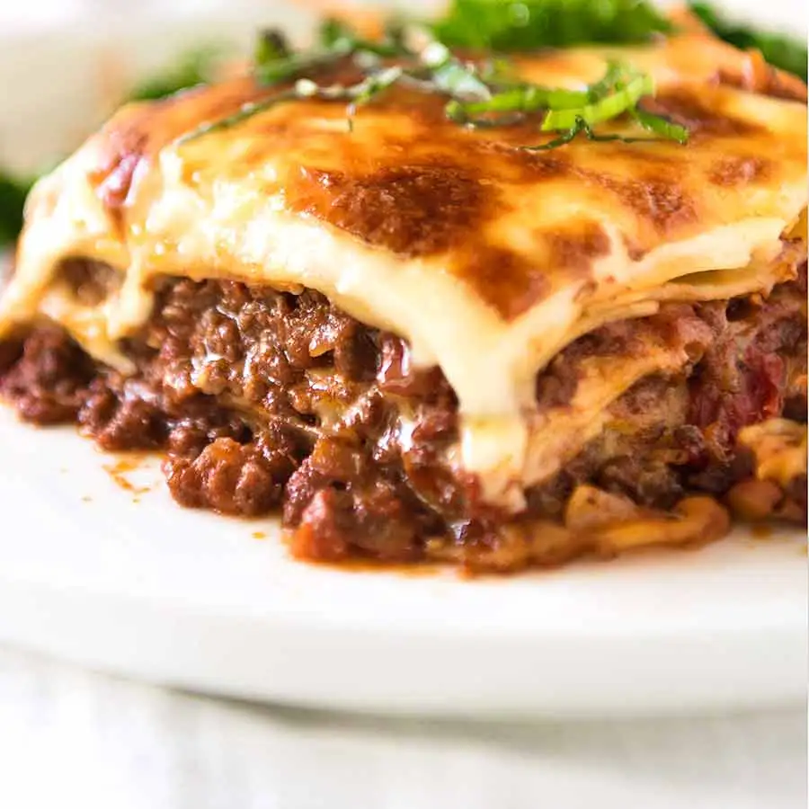

Lasagne

Lasagne
are a type of pasta, possibly one of the oldest types,[2] made of very wide, flat sheets. Either term can also refer to an Italian dish made of stacked layers of lasagne alternating with fillings such as ragù (ground meats and tomato sauce), vegetables, cheeses (which may include ricotta, mozzarella, and parmesan), and seasonings and spices, like Italian seasoning, such as garlic, oregano and basil.[3] The dish may be topped with grated cheese, which becomes melted after baking. Typically cooked pasta is assembled with the other ingredients and then baked in an oven. The resulting baked pasta is cut into single-serving square portions.
Ingredients
- Olive Oil
- Celery
- Pork Mince
- Rosemary
- Thyme
- Mushrooms
- Carrot
- 200ml Milk
Steps
-
First, make the béchamel sauce. Put the milk, onion, bay leaves and cloves into a large saucepan and bring very gently just up to the boil. Turn off the heat and set aside for 1 hr to infuse.
-
For the meat sauce, put the oil, celery, onion, carrot, garlic and pancetta in another large saucepan. Gently cook together until the veg is soft but not coloured.
-
Tip in the beef and pork mince, the milk and chopped tomatoes. Using a wooden spoon, stir together and break up and mash the lumps of mince against the sides of the pan. When the mince is mostly broken down, stir in all the herbs, the stock cubes and the red wine, and bring to a simmer. Cover and cook for 1 hr, stirring occasionally to stop the bottom catching.
-
Uncover and gently simmer for another 30 mins-1 hr until the meat is tender and saucy. Taste and season.
-
To finish the béchamel sauce, strain the milk through a fine sieve into one or two jugs. Melt the butter in the same pan then, using a wooden spoon, mix in the flour and cook for 2 mins.
-
Stir in the strained milk, a little at a time – the mix will thicken at first to a doughy paste, but keep going, adding milk gradually to avoid lumps. Bring to a gentle simmer, stirring constantly (if you have lumps, give it a quick whisk). Gently bubble for a few minutes until thickened. Season with salt, pepper and a good grating of nutmeg.
-
Heat the oven to 180C/160C fan/gas 4. Spread a spoonful of the meat sauce over the base of a roughly 3.5-litre baking dish. Cover with a single layer of dried pasta sheets, snapping them to fit if needed, then top with a quarter of the béchamel. Spoon over a third of the meat sauce and scatter over a little of the parmesan.
-
Repeat the layers – pasta, béchamel, meat and parmesan – two more times to use all the meat sauce. Add a final layer of pasta, the last of the béchamel and remaining parmesan. Sit the dish on a baking tray to catch spills and bake for 1 hr until bubbling, browned and crisp on top.